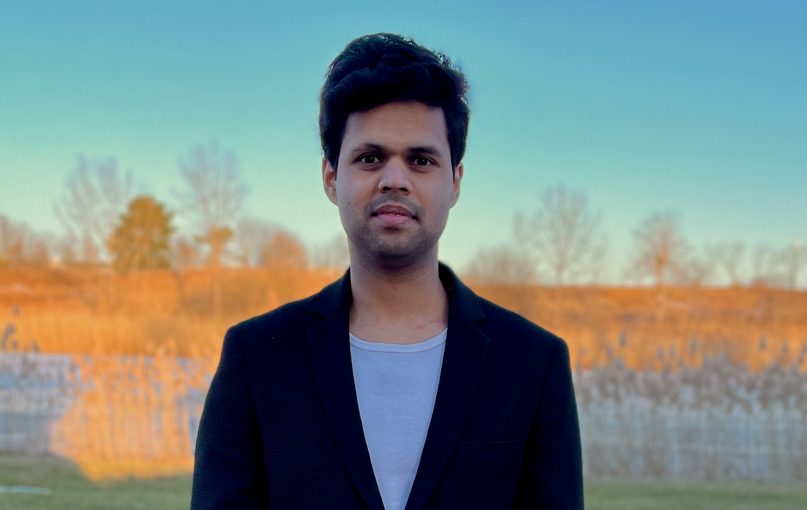

Ashok Veeraraghavan
Rice University
Active perception, generative modeLing, and computational imAging for robotics Systems.
ATLAS aims to build a forum around active image formation, multimodal sensing control, and learning methods that convert better observations into better embodied behavior.
Active perception in robotics has traditionally emphasized viewpoint selection and sensor placement, while computational photography has shown that image formation itself can be controlled through exposure, illumination, coding, and other acquisition choices. This workshop asks how robot learning and generative models can unify these ideas: enabling robots to predict counterfactual observations under alternative sensing actions, optimize how data is acquired, and improve downstream performance in navigation, SLAM, manipulation, and exploration.
ATLAS is organized around these ideas:
Work on generic image enhancement, passive perception, broad foundation models, or generative imagery is in scope only when it is tied to a robot sensing/control loop where the robot chooses how to acquire information.
ATLAS is planned as a focused half-day workshop with invited talks, contributed posters or lightning talks, and discussion around challenge-driven questions.
Exact timing, submission logistics, and final session structure will be updated once confirmed.
Rice University

Carnegie Mellon University

MIT
We invite 2-page extended abstracts, excluding references, on research directions that fit the workshop scope.
Submissions may include early ideas, preliminary results, negative results, demos, challenge statements, datasets, benchmarks, systems, evaluations, or position pieces.
Contributions should make clear how sensing is treated as an action space for a robot, embodied agent, or task-grounded perception system.
Submission deadlines and the submission link will be added once finalized.



For questions about the workshop, contact yashturk@buffalo.edu.